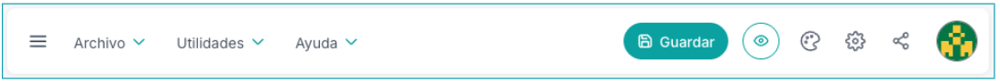
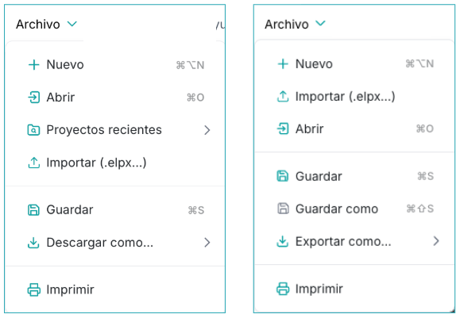
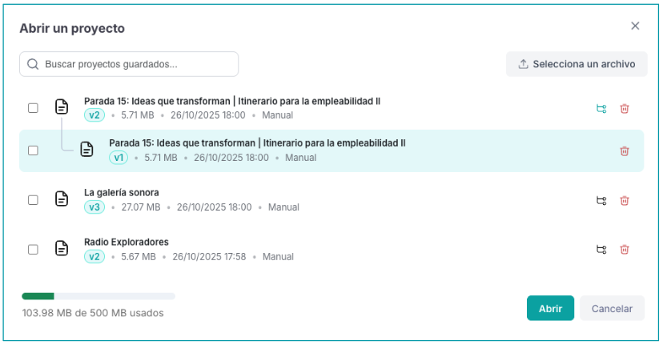
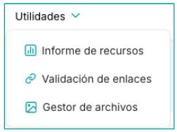
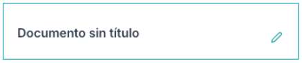
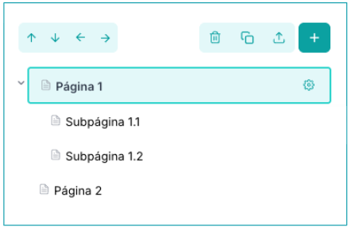
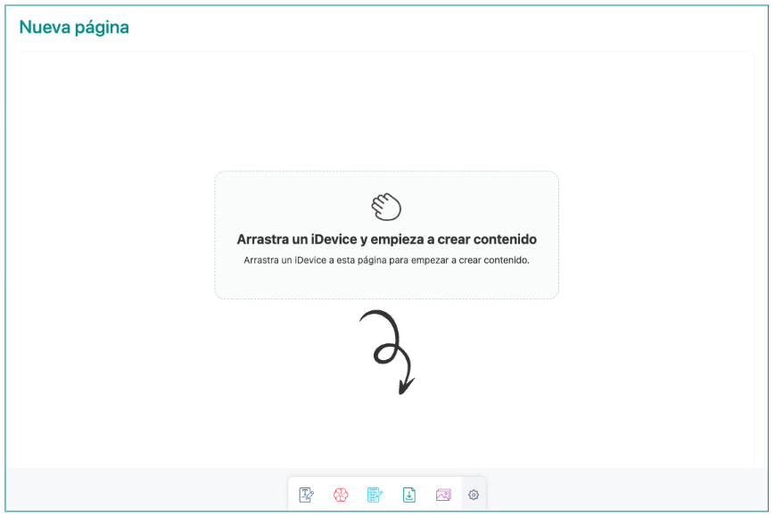
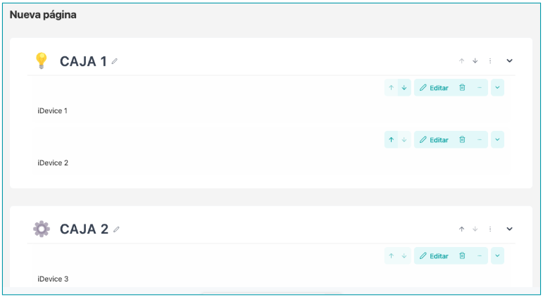

The eXeLearning interface is designed to be intuitive and accessible, facilitating teachers the creation of interactive educational materials in a simple way.
- Menu Bar: contains the essential tools for project management.
- Side column: contains the project title, the structure panel and the iDevices panel.
- Central area: Content editing area.

Bar of menu
This bar, located at the top, contains the essential tools for project management: Archive, Utilities and Help, as well as access to other features.

Menu Archive
From this menu we can open and save projects. you can open elp files (created with eXe 2), elpx files (Created with exe 3) and editable zip or SCORM files created with exe.
It also allows you to print and export them (in the desktop version) or download them (on the online version) in different standard formats. This includes web formats (HTML), e-books (ePub3) and educational standards such as SCORM or IMS, which are necessary to work with platforms such as Moodle.

In addition, in the case of the online version, by clicking open you can also access the latest saved files and their latest versions.

Menu Utilities
From this menu we can access the following functions:
- Report of Resources: a table that contains all the resources (file, images, video, etc.) used throughout the project, indicating the page and box in which it is located.
- Validation of links: a table that contains the broken links of the project, indicating the page and box in which it is located.
- Manager of filesIt facilitates the insertion of complex content.

Menu of Help
It contains information about eXeLearning, the current version, legal notes, website and other relevant project information

Buttons and other accesses
In addition, from the top right of the interface, we can access the following buttons:

- guardedKeep the project. Remember that all the idevices must be closed to be able to save.
- Preview ofShowing the content in advance view, which is how it will be seen on the export Website.
- StylesIt allows to change the style to one of the default installed or import a new one.
- Configuration of the projectIt allows you to enter the project metadata, decide on the export preferences – such as adding a page counter, a accessibility bar or a search engine – or adding personalized code.
- Sharing It makes it easy for several people to work on the same project at the same time by sharing the link to it.
- User ProfileIt gives access to:
- It allows to define the language and license of the contents.
- Closing session / Exit.
The Side Panel
This side panel is used both to organize the project as well as to access the content blocks that will be inserted into the pages.
Title
You can also introduce or modify the title in Project Configuration (top bar)

Panel of Structure
The structure panel allows you to organize the content in pages and subpages.The user can structure the content, allowing you to create new pages, delete them, duplicate them or reorganize them.

In addition, on each page the properties of the same can be modified.

From the Structure panel, the user can also import boxes or idevices to the page that is selected by clicking on the icon:

Panel of Devices
The iDevices (content blocks) are the central element of the tool. They are blocks or "puzzle pieces" that facilitate the incorporation of different types of content easily, including texts, images, videos, audio and interactive activities. In the interface, these iDivices are grouped into categories for their easy location:
- Information and PresentationThey show information, organize resources or enrich content with accessibility and various means.
- Evaluation and MonitoringThey offer questionnaires and other tools to check knowledge or advances, with option to give feedback.
- The Games. They use game mechanics to motivate and strengthen learning without evaluative pressure.
- Interactive activitiesThey require direct interaction, fostering active learning and trial error.
- SciencesDesigned to work content of specific areas or topics.

By clicking on each of these sections, the iDevices in the category will be displayed.
area of work
This area is the main work space where the project content is built. To start creating, we click or drag the selected iDevice from the iDovices panel or from the favourite bar that appears at the bottom of the work area. The iDivices that appear on this bar can be modified by clicking on the wheel that appeares at the right.

Boxes vs iDevice
Each box may have an icon and associated title and may contain as many iDevices as we want.
When we drag a iDevice to the work area, we will be able to place it inside an already existing box (in or below other iDeviices) or directly in the pen. In this case, a box will automatically be created to contain it. Once edited and saved the iDEVice, we can edit the title and icon of the box.

Both the boxes and the iDevices can to edit, to clone, to eliminate, to move and to export from its toolbar, located on the top right of each. In addition, in the properties you can configure other aspects:
- whether it is visible in export or not.
- to be visible only in a teaching manner
- Adding an ID to iDevice
- Introduction to CSS
- that appears minimised by default (only the boxes).